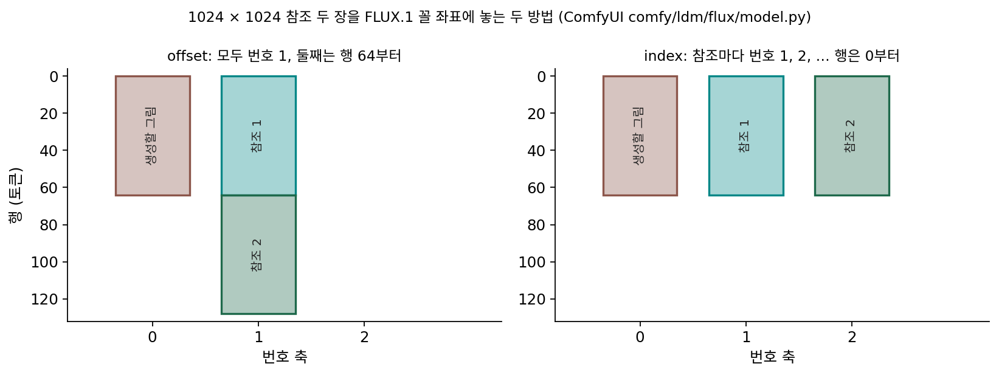

번호 축: 위치 인코딩으로 참조끼리, 생성 칸과 참조를 가른다
참조 토큰을 같은 줄에 이어 붙였다. 그런데 어텐션은 위치 정보를 주지 않으면 토큰의 순서를 모른다. 디퓨전 트랜스포머는 그림 토큰마다 (행, 열) 좌표를 회전 위치 인코딩으로 넣어 자리를 알렸다. 참조 그림의 토큰에도 (행, 열)을 0부터 매기면, 참조의 왼쪽 위 토큰과 생성할 그림의 왼쪽 위 토큰은 좌표가 똑같다. 참조가 두 장이면 세 토큰이 같은 자리에 겹친다. 어텐션에게 이 셋은 「같은 칸에 놓인 서로 다른 내용」이다. 생성 칸과 참조를, 참조끼리를 어떻게 갈라 놓아야 할까?
역사: 한 장일 때는 늘 0이던 축
FLUX.1 은 처음부터 좌표를 셋 받았다. 머리 하나의 질의·열쇠 128개 성분을 16 + 56 + 56 으로 나눠 (번호, 행, 열)을 맡겼는데, 그림 한 장만 만들 때 첫째 축은 늘 0이었다. Kontext 논문은 이 비어 있던 축을 썼다. 생성할 그림의 토큰은 (0, 행, 열), i 번째 참조의 토큰은 (i, 행, 열)이다. 논문은 이 덧붙인 수를 「가상의 시간 걸음」이라 부르며, 참조와 결과를 깨끗이 가르면서 각 그림 안의 공간 짜임은 그대로 둔다고 적었다. 영상의 프레임 번호처럼 참조를 「앞 장면」으로 놓은 셈이다.
Qwen 팀은 다른 고민에서 출발했다. 기술 보고서에 따르면, 그림 좌표를 그림 가운데를 0으로 매기고 글 토큰을 [1, L] 꼴의 2차원 토큰으로 이어 붙인 앞선 방법(Seedream 3.0 의 Scaling RoPE)에서는 글 토큰과 가운데 줄 그림 토큰의 좌표가 같은 꼴이 되어 둘을 가르기 어려웠다. 그래서 그림 좌표는 가운데를 0으로 두고, 글 토큰은 그림 격자의 대각선 끝에서부터 (k, k, k) 꼴로 이어지게 했다(MSRoPE). 편집 모델에서는 여기에 「프레임」 축 하나를 더해 편집 전과 후의 그림을 갈랐다고 적었다.
번호가 하나 다를 때 남는 점수
회전 위치 인코딩에서 질의와 열쇠의 점수에는 두 토큰의 좌표 차이만큼 돌린 각이 들어간다. 번호 축을 맡은 성분 쌍들이 번호 차이 Δ만큼 돌아간다. 같은 행·같은 열에 놓인, 내용이 똑같은 두 토큰(q = k)의 점수가 번호만 다를 때 제자리 점수의 몇 배로 남는지를, 성분 크기가 고르다고 두고 평균 내 보자.
Krea 2 꼴(성분 128 = 32 + 48 + 48, 밑 1000)에 넣으면 R(1) = 0.987이다. 같은 그림에서 바로 한 행 옆 토큰의 값(0.983)과 거의 같다. 번호가 하나 다른 참조 토큰은 블록에게 「같은 칸의 바로 앞 장면」쯤으로 보인다는 뜻이다. 번호 축은 둘을 벽으로 막지 않는다. 블록이 학습으로 「번호가 다르면 다르게 읽어라」를 배울 수 있는 손잡이를 줄 뿐이다. 참조와 결과가 칸끼리 거의 맞는 편집(컵 색만 바꾸기)에서는 같은 칸의 참조를 쉽게 찾아 읽는 것이 오히려 쓸모 있다.
참조가 여러 장이면 번호를 어떻게 매길까? ComfyUI 코드에는 길이 둘 있다. index 는 참조마다 번호를 1, 2, 3 … 으로 하나씩 올리고 (행, 열)은 0부터 다시 매긴다. offset 은 모든 참조에 번호 1을 주고, 둘째 참조부터는 앞 참조 아래나 오른쪽으로 (행, 열)을 밀어 큰 판 하나에 펼쳐 놓는다.

이렇게 그림이 여럿일 때 좌표의 첫째 축으로 「몇 번째 그림인가」를 매겨, 생성할 그림과 참조, 참조끼리를 가르는 것을 번호 축 (몇 번째 그림인가를 적는 좌표 / index axis)이라 한다.
위젯에서 모델 꼴과 방법, 참조 장 수를 바꾸면 참조마다의 (번호, 첫 행, 첫 열)과, 그 번호 차이에서 남는 점수 비가 보인다. 점선은 같은 그림 안에서 한 행 옆, 64행 떨어진 토큰의 점수 비다.
ML에서: 모델마다 다른 좌표
ComfyUI 코드에서 읽은 각 모델의 좌표는 이렇다.
| 모델 | 생성할 그림 | 참조 | 글 토큰 |
|---|---|---|---|
| FLUX.1 Kontext | (0, 행, 열) | 기본 offset: 모두 번호 1, 옆으로 펼침 |
(0, 0, 0) |
| FLUX.2 | (0, 행, 열, 0) | 기본 index, 번호 간격 10: 10, 20, 30 … |
(0, 0, 0, 토큰 순서) |
| Qwen-Image-Edit | (0, 행, 열), 가운데가 0 | 기본 index: 1, 2, 3 …, 가운데가 0 |
대각선 (k, k, k) |
| Krea 2 | (0, 행, 열) | index 꼴: 1, 2, 3 … (기본값은 꺼져 있음) |
(0, 0, 0) |
(comfy/model_detection.py 의 default_ref_method·ref_index_scale, comfy/ldm/qwen_image/model.py, comfy/ldm/krea2/model.py. Krea 2 는 ComfyUI 에서 default_ref_method 가 비어 있어, 참조 방법을 따로 정하지 않으면 참조 잠재를 쓰지 않는다.) ComfyUI 의 「Edit Model Reference Method」 노드는 offset, index, uxo/uno, index_timestep_zero 가운데 하나를 고르게 한다. 고르는 기준은 글 인코더의 층을 고를 때와 같다. 더 그럴듯한 것이 아니라 모델이 학습 때 받은 좌표에 맞춘다.
문제 10. 아파트의 동과 층
101동 5층에 사는 친구 집을 찾는다. 동 사이는 30 m, 한 층은 3 m 다. (가) 102동 5층과 101동 6층 가운데 어디가 친구 집에서 더 가까운가? (나) 엘리베이터 안내판이 층만 적혀 있고 동 번호가 없다면, 101동과 102동의 5층 집은 안내판으로 가를 수 있는가? (다) 동 번호를 「1동, 2동」 대신 「10동, 20동」으로 매기면 무엇이 달라지는가?

(가)는 6층이 3 m, 옆 동이 30 m 라 6층이 가깝죠.

(나)는 못 가르지. 층 정보만 있으면 두 집 주소가 같아.

(다)는요? 건물이 옮겨지는 건 아니잖아요.

건물 사이 실제 거리는 그대로지만, 주소에 적힌 수의 차이가 10배가 돼요. 주소의 수 차이로 멀고 가까움을 재는 사람에게는 이웃 동이 열 배 멀어 보이고요.

그래요. 동이 번호 축, 층이 행 축이에요. 번호가 없으면 같은 칸의 두 그림 토큰은 주소가 같고, 번호를 매기면 갈라져요. 그 수를 얼마나 벌려 매기느냐는 어텐션이 그 차이를 얼마나 크게 느끼느냐를 바꿔요.

강의실 번호를 층마다 101, 201 로 매기는 거랑 같네요. 같은 자리 강의실도 층 숫자로 바로 갈라지니까요.
문제 11. 번호 하나만큼 돌리면
FLUX.1 은 머리 하나의 성분 128개(쌍 64개) 가운데 첫 16개(쌍 8개)를 번호 축에 쓰고, 밑이 10000이라 번호 축 j 번째 쌍은 번호 하나에 ωj = 10000−j/8 라디안을 돈다. (가) ω0, …, ω7 을 구하고, 번호 차이 1에서 cos(ωj) 들의 평균을 구하라. (나) 위의 식으로 R(1)을 구하라. (다) 질의·열쇠의 힘이 모두 가장 빠른 쌍(ω0)에 몰려 있다면 번호 차이 1, 2, 10에서 점수는 제자리 점수의 몇 배인가?
(가)는 1, 0.316, 0.1, 0.0316, 0.01, 0.00316, 0.001, 0.000316. 코사인은 0.540, 0.950, 0.995, 0.9995, 그다음 넷은 1에 아주 가까워서 합이 7.485, 평균 0.936.
(나)는 1 − (8/64)(1 − 0.936) = 0.992요. 번호가 하나 달라도 점수가 1%도 안 줄어요.
그럼 번호 축은 있으나 마나 할까요? (다)를 보죠.

가장 빠른 쌍만 보면 cos 1 = 0.540, cos 2 = −0.416, cos 10 = −0.839요. 번호 차이 2부터는 점수가 음수가 돼요.
평균이 0.992인 건 느린 쌍 일곱이 거의 안 돌고, 번호 축이 전체 성분의 8분의 1뿐이라서야. 블록이 학습으로 빠른 쌍에 힘을 실으면 같은 번호 차이도 크게 느낄 수 있어. 0.992는 「아무것도 안 배운 평균」의 값이고.
그래요. 번호 축은 갈라 볼 수 있는 길을 열어 줄 뿐이고, 얼마나 갈라 볼지는 학습이 정해요. 번호 간격을 10으로 매기는 모델은 그 길을 처음부터 넓혀 둔 셈이고요.

시계 바늘로 치면 초침은 1초에도 크게 돌고 시침은 거의 안 움직이는데, 시침만 보는 사람한테는 1초 차이가 안 보이는 거네요.
문제 12. 한 장으로 배운 모델에 두 장
FLUX.1 Kontext [dev] 은 참조 한 장으로 학습했다(논문). 학습 때 참조 토큰은 모두 번호 1이었다. 이 모델에 1024 × 1024 참조 두 장을 넣는다. (가)
offset과index로 놓을 때 둘째 참조의 좌표는? (나) 어느 쪽이 학습 때 본 좌표와 더 닮았는가? (다) Qwen-Image-Edit-2509 는 여러 장을 이어 붙여 더 학습했고 기본이index다. 같은 물음에 답이 달라지는가?
위젯 2 에서 「FLUX.1 꼴」과 두 방법을 번갈아 고르면 좌표를 견주어 볼 수 있다.
(가) offset 이면 둘째 참조는 번호 1, 행 64부터, 열 0부터요. index 면 번호 2, 행·열 0부터고요.
(나)는 offset 이야. 번호 2는 학습 때 한 번도 나온 적 없는 값이지만, offset 의 둘째 참조는 번호 1에 행만 밀린 거라, 모델에게는 세로로 긴 참조 한 장처럼 보여.
세로로 긴 참조 한 장으로 보이면 잃는 건 없을까요?

두 그림의 경계가 이어진 한 장면처럼 읽힐 수 있어요. 첫째 참조의 아래쪽과 둘째 참조의 위쪽이 이웃한 행이니까, 「위의 사람과 아래의 옷」이 한 사진 속 위아래로 읽히는 거죠.

(다)는 달라져요. 여러 장을 번호 1, 2, 3 으로 배운 모델이면 index 가 학습 때 본 좌표고, offset 으로 넣는 게 오히려 처음 보는 배치예요.
그래요. 좌표 방법은 그럴듯해 보이는 쪽이 아니라 그 모델이 배운 쪽을 골라요.
A4 한 장짜리 양식으로 배운 신입한테 서류 두 장을 주면, 이어 붙여 긴 한 장처럼 주는 게 덜 헷갈리는 거랑 같네요.